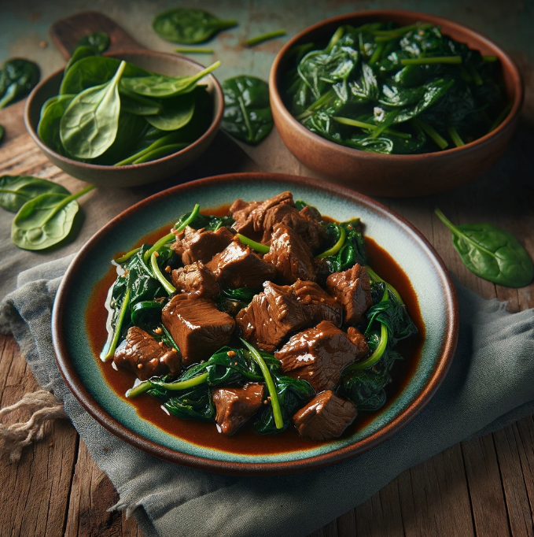

Beef Adobo with Sauteed Spinach
Ingredients
- 1 pound beef stew meat, cut into bite-sized pieces
- 1/2 cup soy sauce
- 1/4 cup vinegar
- 4 cloves garlic, minced
- 1 onion, sliced
- 2 bay leaves
- 1 teaspoon whole peppercorns
- 1 tablespoon cooking oil
- 4 cups fresh spinach leaves
- Salt and pepper to taste
| Nutrition Facts |
| Calories |
476 kcal |
| Total Fat |
27g |
Meal Procedure
- Marinate the Beef: In a bowl, combine the soy sauce, vinegar, minced garlic, onion slices, bay leaves, and whole peppercorns. Add the beef pieces to the marinade and toss to coat. Cover and marinate in the refrigerator for at least 1 hour or overnight.
- Cook the Beef Adobo: In a large skillet or pot, heat the cooking oil. Remove the beef from the marinade, reserving the liquid. Brown the beef on all sides, then pour the reserved marinade over it. Simmer for 1 to 1.5 hours until tender.
- Sauté the Spinach: In a separate skillet, sauté fresh spinach leaves in oil until wilted. Season with salt and pepper.
- Serve: Transfer the beef adobo to a serving dish and serve with sautéed spinach.
Tips:
- Adjust the amount of soy sauce and vinegar according to taste.
- For a richer flavor, add coconut milk or beef broth to the beef adobo.
- Garnish with chopped green onions or fresh cilantro before serving.
- Serve with steamed rice or cauliflower rice for a complete meal.